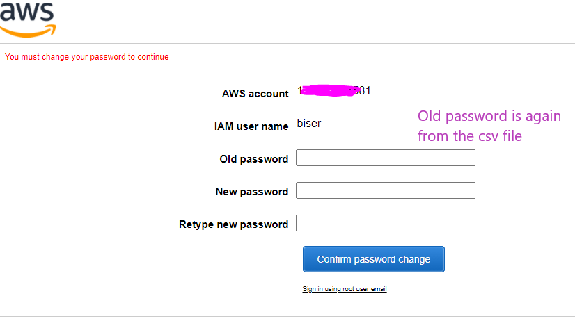
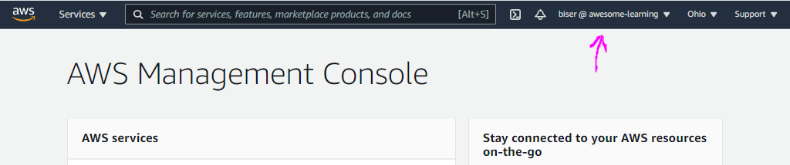

Basic usage
-
Click Users from the menu on the left, then Add User

-
Fill the following information. The 4th step is just to review the selection from the previous steps. Download the csv file on the 5th step


-
Now you can see your new user in the Users section
-
Next step is to create a group. Click Groups from the menu on the left, then Create new group button

-
Give it a name. Attach policies you need. Third step is to review the selection so just click Create New Group


-
Now you can find your groups in the Groups section. Click it to add users in the group. From the Users tab click Add Users to Group, check all the users you want to add and click Add Users


-
Now after we have added our user to our admin group the user will inherit all of the admin group permissions. So we can go back to user's permission and remove Administrator access because he will inherit it from the group and if we in future remove the user from the admin group he will automatically lose the admin rights

Attached directly policies are also hard to manage, because they go with the specific user, not on a group level
-
Something also good to do is to update password policy for all IAM users. Click Account settings from the menu on the left, then click Change password policy

-
Set the requirements for the policy which each user must follow, when setting up a password. And click Save changes

-
And because we don't want to use the root account we will also use alias


-
Now we can use that new alias URL to log in with it

-
Reset your password now, because this is requirement for our IAM users
 -
And now you will be logged in with your new user
 - That's it, now you have admin user which you can use instead of your root user account, also alias replacing the account as a number
- One more thing is to also set MFA for this new user. To do that click your username (top-right on the screen) and from the drop down select My security credentials. Then Assign MFA device, then Virtual MFA device. Scan the QR code and finish the process